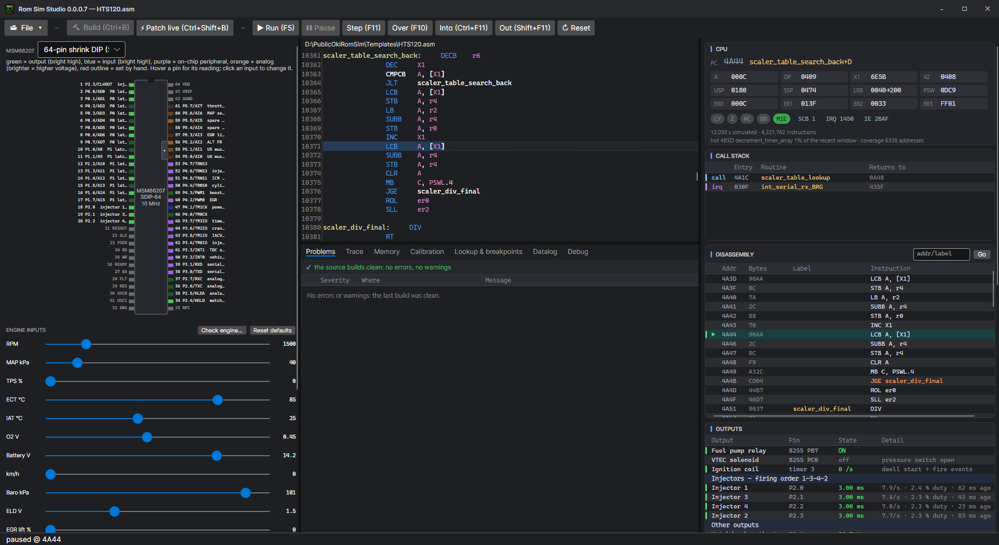

Rom Sim Studio guide
How to use every part of the program: writing and simulating ROMs for the OKI MSM66207 in 1990s Honda OBD1 ECUs, building a ROM of your own from the skeleton, and tuning and datalogging a car.

Start here
Getting startedInstall, the first-start question, opening a ROM, updates.
Simulator and Tuner modesThe two ways the window is laid out, and when to use each.
Creating a custom ROMThe skeleton, the functions, the ROM and RAM bars, the safety checks.
Setting up a ROMThe set-up wizard and its presets, and adding functions to a ROM you have.
Tuning a carMaps, settings, feature pages and the live cell from the datalog.
DataloggingCables, protocols, channels, codes, smoothing, playback.
Remote controlEvery serial command, and how to build a remote panel.
Virtual dynoPower and torque from the datalog: on a roller, or the car on a strip.
TroubleshootingA link that will not connect, an ECU that will not boot, and more.
What it is
Rom Sim Studio is two tools in one window:
- A workbench for the ROM itself — an assembler that builds byte-for-byte what the original tools build, a simulator of the MSM66207 and the engine around it, a debugger with breakpoints, a trace, a memory map and a view of every pin. Change the code, run it, watch what it does.
- A tuner for the car — a calibration editor for the maps and settings, a datalogger for the common OBD1 protocols and widebands, emulator support (Moates Ostrich 2.0 and Demon) so changes reach the car as you make them, and the cell the engine is in marked on the map as it runs.
Between them sits File > New ROM: a stock P30 ROM cut down to what runs the engine (the skeleton), and around fifty functions — launch control, boost control, datalogging, protection and more — to build into it. You pick the functions; the program checks they fit, work together and leave the engine safe, and writes the ROM.
Your engine, your riskChanging an engine computer can damage it, the car and the engine. Simulate first, start from safe values, and read the licence.
Help and community
Questions, tunes, modules and bug reports are welcome on the Discord.